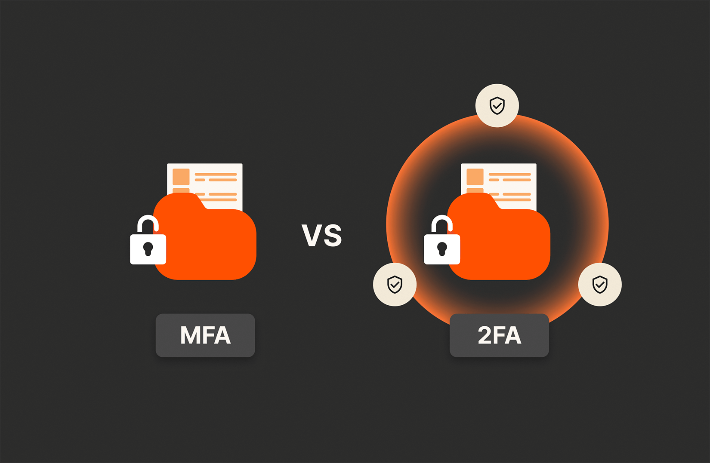

Autenticação de Dois Fatores evita ataque a rede de universidade federal
Atualizado em 06/08/2025 — 13h10 | Belo Horizonte
Uma tentativa de ataque cibernético foi frustrada na UFMG graças à autenticação de dois fatores (2FA).
Mesmo com senhas obtidas via e-mails falsos, os criminosos não conseguiram avançar sem o código temporário enviado ao celular dos usuários.
“Sem o segundo fator de autenticação, o prejuízo poderia ter sido enorme”, disse Fernanda Lima, chefe de segurança da informação da UFMG.
O que é 2FA?
É um método de segurança que exige dois tipos de autenticação: algo que o usuário sabe (senha) e algo que ele possui (celular, token, app).